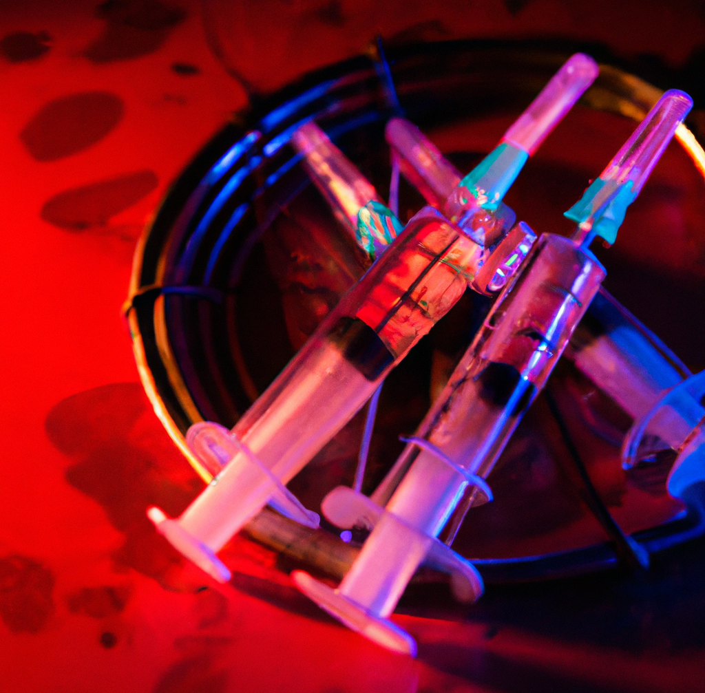
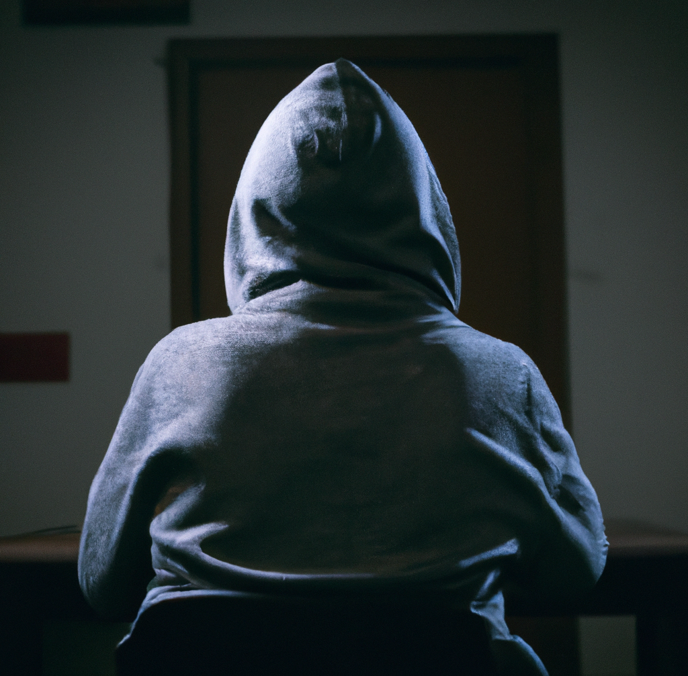

My name is Mack, I'm 19 years old and I'm a drug addict. It started with LSD, and it quickly escalated to other things. I couldn't control myself, and I was constantly chasing that next high.
My addiction got worse and worse with time. I lost my friends, and I failed school. My parents couldn't reason with me, no matter how hard they tried. I was out of control, and I didn't care about anything except for getting my next fix.
After I took drugs, I would become violent and aggressive. I was detached from reality, and I didn't care about anything except for my own pleasure.
During one of my trips, I wanted to do all sorts of terrible things. I was consumed by my addiction, and I was completely out of control.
I wanted to hurt people, to cause pain and suffering. I wanted to destroy things, to cause chaos and confusion. I was filled with anger and hatred, and I wanted to take it out on anyone and anything I could.
I wanted to kill my cat, but that was just the tip of the iceberg I wanted to hurt my parents, to make them pay for all the times they had tried to stop me from using drugs. I wanted to hurt my friends, to make them pay for abandoning me when I needed them the most.
I wanted to hurt everyone and everything, and I was willing to do whatever it took to make it happen. I was out of control, and I was a danger to myself and to those around me.

I don't remember what happened next. What I do remember, though, is that I woke up in a mental hospital. My parents locked me up here. Abandoned me. And they keep me in a closed room, like a prisoner. I want to get out. I need to get out. And I want to use again so much...
I hate the therapy sessions, and I hate talking about my feelings. I hate having to confront all of the terrible things I did when I was using drugs, and I hate having to deal with the guilt and the shame.
Sometimes, I just want to break out of this place and go back to my old life. I want to lose myself in the drugs again, to escape from the pain and the reality of my situation. I want to be an addict, because it's easier than facing the truth.
I'm such a terrible fucking person, am I not?